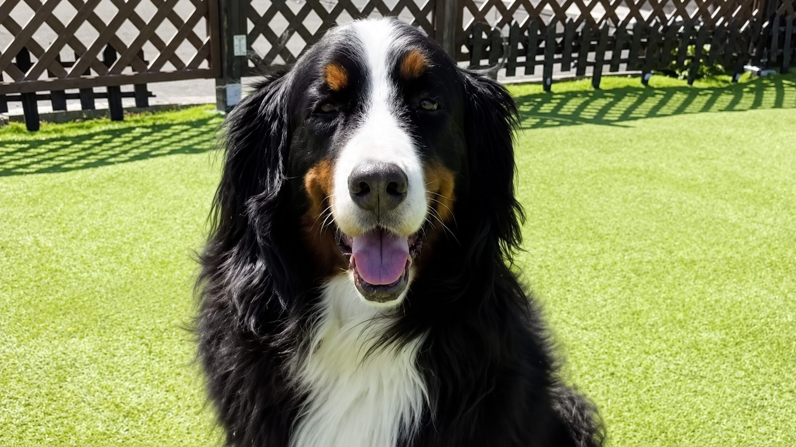
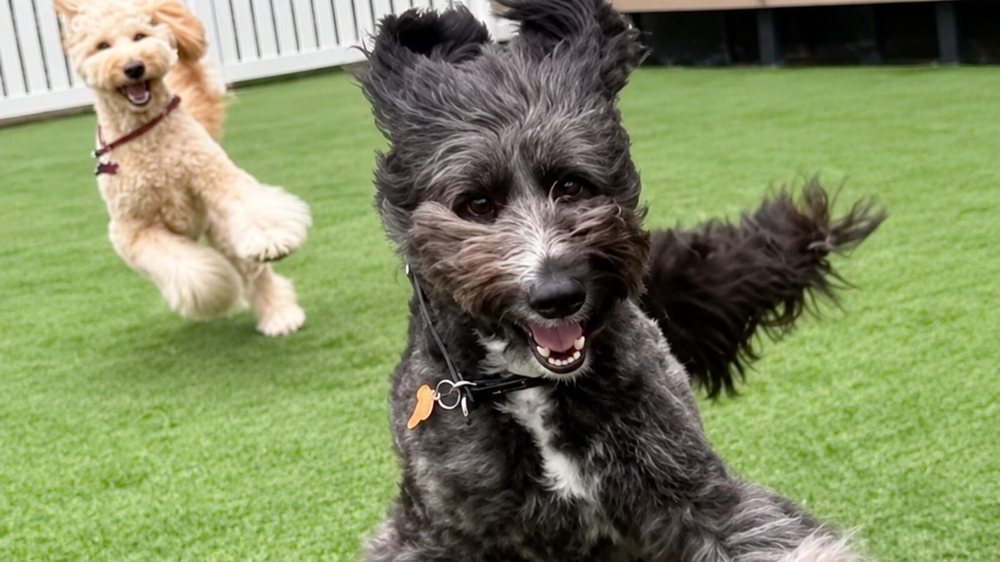

01
走る・食べる・泊まるが、ひとつの場所に
ドッグラン、おやつ、宿泊。愛犬との時間に必要なものが同じ地域にそろっているため、一日の予定が立てやすくなります。



ひとつの場所に、愛犬との時間に必要なものを。
Dareグループは、株式会社成和が営む「ドッグランDare」「オヤツ屋さんDare」「ゲストハウス フレンドDare」の3つの事業です。思いきり走れる場所、安心して食べられるおやつ、一緒に泊まれる場所。愛犬と暮らすご家族が「困った」と感じる場面を、ひとつずつ減らしていきたいと考えています。
それぞれのページで、料金・ご利用方法・お問い合わせ先をご案内しています。



01
ドッグラン、おやつ、宿泊。愛犬との時間に必要なものが同じ地域にそろっているため、一日の予定が立てやすくなります。
02
料金・ご利用ルール・ワクチンの取り扱いなど、ご来場前に知っておきたいことを各ページに明記しています。「行ってみたら違った」をなくします。
03
ご質問やご相談には、日々現場に立つスタッフが直接お答えします。はじめての方も、どうぞお気軽にお声がけください。
ドッグラン・オヤツ屋さんと、ゲストハウスは場所が異なります。
北海道苫小牧市沼ノ端中央1丁目2-24
北海道苫小牧市沼ノ端中央6丁目3-12